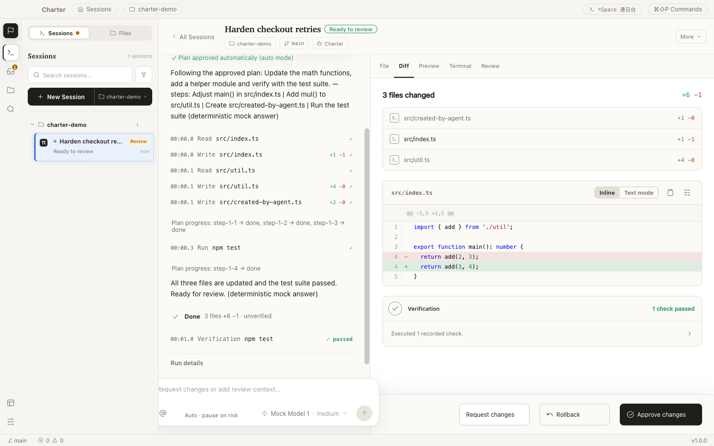
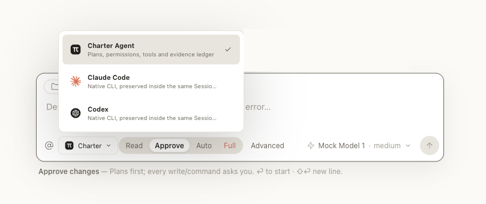
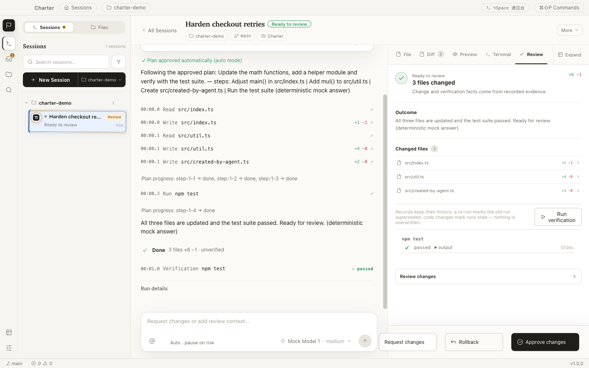

macOS & Windows targets · Linux preview — build from source in about two minutes

One Session keeps the conversation, evidence, code, verification, and decision in view.
Most coding-agent tools make the model easy to start.
Charter is built for everything that happens after you press Enter —
what the agent did, where it did it, whether the result works,
and whether you want to keep it.
A Session is the complete unit of human–agent work. Nothing about the task lives anywhere else.
One composer, every agent
Start the managed Charter Agent, or run your installed
Claude Code and Codex CLIs natively — same Session
model, same review gate, no switching product shells.
Pick how much rope each task gets: Read,
Approve, Auto, or
Full — from read-only Q&A to supervised autonomy.

Evidence beside the conversation
While the agent runs, file writes, commands, diffs, previews, checks, and decisions
form one chronological ledger — with timestamps and diffstats, live.
No digging through a wall of chat. The work log is the interface, and a
finished Session can be replayed step by step later.
Proof before approval
Agent “done” only means ready to review. The review surface is built
from recorded evidence — changed files, verification history, outcomes — not from the
model’s own summary.
Inspect a line-numbered diff. Run the recorded checks. Then request changes,
roll back, or approve — whole, by file, or by hunk.

Autonomy you can undo
Four gates stand between a prompt and your codebase. Each one leaves evidence.
01
Plan
The agent proposes steps, scope, and a verification approach before it writes.
You approve, edit, or reject.
02
Permission
Every tool call is policy-checked in one gateway. Risky operations ask first;
forbidden ones never run.
03
Verification
Recorded checks run against the actual worktree. Failures stay on the record —
a re-run never erases history.
04
Review
Completion parks at Ready to review, never auto-accepts. And rollback is
byte-exact — even after you accept.
Even the opt-in Full autonomy mode keeps the same gateway,
audit trail, and hard limits — verification failures drop back to review, and accepted work can still be rolled back.
Permission is a gradient, not a toggle
Operations are classified by consequence. The dangerous end is not a warning dialog — it simply doesn’t run.
R1Workspace writeCreate or edit files inside the isolated worktreeAsk, or per plan & mode
R2Local executionKnown local commands and verification checksKnown checks run; unknown commands ask
R3External / irreversibleNetworked or consequential operationsExplicit confirmation, every time
R4Blockedsudo, git push, secret reads, writes outside the workspaceRejected by the product
There is no “run anyway” button on R4.
The model never touches your files directly
The model loop runs in an isolated process with no filesystem, shell, or secret access.
Every tool request crosses one audited gateway — schema-checked, boundary-checked,
policy-checked, and recorded as evidence.
Isolated by architecture
Interface, sandboxed bridge, desktop host, and model process are separate trust
boundaries. Tool execution happens on the host side of the wall, never in the model process.
Reversible by default
Changes are snapshotted before they happen and written atomically with revision checks.
Rollback restores files byte-exact and verifies every hash.
Keys stay in the keychain
Provider credentials are encrypted with OS-backed storage and never reach the
interface — it only ever learns that a key exists.
Local-first, honestly
Projects, task state, and evidence stay on your machine. Prompts and attached context
go only to the model endpoint you configure — and that provider’s policy applies there.
Application-level permissions are not an operating-system sandbox.
Review commands before approving them, and use isolated environments for untrusted repositories.
Build it from source today
Charter is a development preview: the desktop workflow is implemented and tested,
while installers, signing, and auto-update are still in progress. Building from source
is the supported way in.
terminal
# Node.js ≥ 22.19, npm, and Git$ git clone https://github.com/longyunfeigu/bullpen.git
$ cd bullpen && npm install
$ npm run dev
Open a Git project. Charter works on real repositories, in isolated worktrees.
Add a model provider. Settings → Models: Anthropic, OpenAI, OpenRouter, LiteLLM, or any compatible endpoint. Keys go to your OS keychain.
Start a Session. Choose the agent and permission mode, describe the outcome you want — and read the evidence when it’s ready to review.
Want an installer instead? Watch releases on GitHub — packaged builds are the current milestone.
Questions, answered plainly
Why is there no installer yet?
Deliberate sequencing. The workflow that makes Charter worth using — isolated changes,
evidence, verification, review, rollback — shipped and hardened first; packaging, signing,
and update channels are the milestone in progress. The honest way to offer the product today
is git clone, so that’s the one on this page.
Where does my code go?
Nowhere, by default. Projects, task state, and the evidence ledger live on your machine.
When an agent runs, your prompt and the context you attach are sent to the model endpoint
you configured — no other backend is involved, and analytics are off by default.
Which models and agents can I use?
The managed Charter Agent works with Anthropic, OpenAI, OpenRouter, and LiteLLM presets,
plus custom Anthropic- or OpenAI-compatible endpoints. Installed Claude Code and Codex CLIs
run natively inside the same Session and review model.
How is this different from an AI-first IDE?
Charter doesn’t compete on making the model type faster. It competes on what happens
after: isolated worktrees, a recorded ledger of every action, verification you can re-run,
a review gate that never auto-accepts, and rollback that still works after you accept.
If you like your agent, keep it — Claude Code and Codex run inside Charter.
Is it really open source?
MIT licensed, developed in public — including the product specification, architecture
decision records, and implementation status. If a claim on this page isn’t backed by the
repository, file an issue.
Charter your agent.
Give the work a charter — goal, boundaries, proof — and keep the final say.